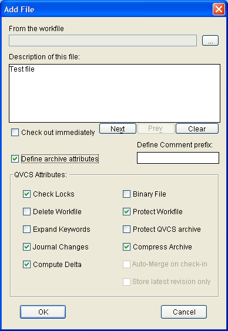

QVCS Attributes
QVCS attributes control the way QVCS-Enterprise handles various behaviors related to the QVCS archive files and workfiles.
When the QVCS-Enterprise server first creates an archive file for the associated workfile, it will embed within the QVCS archive file a set of QVCS attributes.
If the server creates QVCS archive as the result of a bulk addition (for example, if you use the 'Auto-add Files/Directories' context menu accessible by right clicking on a directory node), then the server will use the attributes associated with the workfile's file extension as defined in the qvcs.extension.attributes.properties property file located on the server in the qvcsBehaviorProperties subdirectory.
If creating the archive file for just a single workfile, and you use the context menu by right clicking on the workfile, you can use the 'Add File' dialog to explicitly define the QVCS attributes that you want to associate with the selected file.

Once a file is under version control, you can alter the QVCS attributes for the file by selecting the file, right clicking to get a context menu, and then selecting the 'Set Attributes' menu option. On the resulting dialog:

you can see the current settings for the file's attributes, and alter those attributes if you wish.
| Check Locks | The Check Locks attribute tells QVCS whether or not to bother with QVCS archive lock requests. If Check Locks is enabled (the default), then before a revision may be stored in a QVCS archive, the individual adding the revision must first lock the revision. Typically this is done by checking out a revision which both fetches the most recent revision from the QVCS archive, and locks the revision. Having locks is a way to let others know that you are working on a particular file revision. If someone tries to get a lock on a revision that's already been locked, QVCS shows them that the revision is already locked, and shows them who holds the lock. This prevents people from making concurrent changes to the same revision. Only a person holding a lock is allowed to update that locked revision. If anyone tries to add a revision to a QVCS archive that they don't have a lock on, their request is denied. This feature has obvious utility in situations where more than one person works on a project file.
When Check Locks is disabled, then QVCS ignores any lock requests, and you don't have to hold a lock on the QVCS archive in order to add a revision to the archive. Note that in order to use automatic branching, lock checking must be enabled. |
| Delete Workfile | The Delete Workfile attribute tells QVCS whether to delete the workfile after a storing a new revision. If Delete Workfile is disabled (the default), QVCS will not delete the workfile after a storing a new revision. It may however, write protect the workfile after adding the revision if Protect Workfile is enabled. This is so that if you go to edit the file, you'll be reminded (since you won't be able to overwrite the file) that you didn't lock the QVCS archive. If Delete Workfile is enabled, then the workfile is deleted after storing a revision.
Enabling Delete Workfile is useful if you don't need a copy of the file (linker map files for example). Since you can always retrieve a copy of the file from the QVCS archive if you need to. Enabling Delete Workfile saves disk space. Disabling Delete Workfile is useful if you do need a copy of the workfile to remain in your working directory after the storing a new revision. Uncompiled source code is an obvious example of a file that you'd probably want to keep around. |
| Expand Keywords | The Expand Keywords attribute tells QVCS whether to expand keywords contained in the file. If Expand Keywords is enabled, QVCS expands any keywords present in a fetched revision, and contracts any keywords before storing a revision into the QVCS archive. By default, keyword expansion is disabled. QVCS supports the following keywords:
$Author$ expands to the author of the changes of the current revision; i.e. the person who stores the revision that the current workfile is a copy of. $Author$ is different from the $Owner$ keyword, in that $Author$ is derived from the current revision, whereas, $Owner$ is the person who created the QVCS archive.
$Comment$ is different than other keywords in that it contracts rather than expands. You use the $Comment$ keyword to embed revision comments in a file as you edit it. When you then store the new revision of the file, any $Comment$ keywords present in the file will be extracted from the file and used as revision comments. There's no limit to the number of comments you can embed within your workfile. Separate comments in the workfile are separated from one another by an end-of-line sequence in the revision description and as a block are appended to the revision comment you enter when you check-in the file. The syntax for entering a comment is much like the syntax of an expanded keyword:
$Comment: This comment will become part of a revision description.$
The $Comment$ keyword can only be used effectively for QVCS archives that have Expand Keywords enabled. After a workfile containing $Comment$ keywords is stored, the $Comment$ string is completely removed from the workfile. That is, if you retrieve the latest revision, the $Comment$ string and comment will have been removed.
$Copyright$ expands to $Copyright followed by the copyright message defined in the qvcs.keywords.properties file located in the client's qvcsBehaviorProperties directory. You can customize this copyright message by changing the value of the CopyrightMessage property in that file.
$Date$ expands to $Date: plus the date of the file used to create the current revision. For example:
$Date: Saturday, March 13, 2004 10:02:31 AM EST $
The expanded date is the edit date of the workfile used to create the revision. It is not the date when the revision was created.
$Endlog$ marks the end of an expanded log. You should NOT use this keyword. It's used by QVCS to mark the end of the expanded log. Do not delete it from your workfile either, QVCS will do that automatically when you put your workfile back into the QVCS archive.
$Filename$ expands to $Filename: plus the full pathname of the workfile into which the revision is being retrieved. For example:
$Filename: C:/QumaProjects/com/qumasoft/guitools/qwin/QWinFrame.java $
$FilePath$ expands to $FilePath: plus the name of the workfile relative to the current project. For example:
$FilePath: QumaProjects/com/qumasoft/qvcslib/QVCSKeywordManager.java $
$Header$ expands to $Header: plus the name of the workfile, the current revision, the file date, and the file owner. The $Header$ combines in a single keyword the same information that you'd get if you used $Filename$, $Revision$, $Date$, and $Owner$ separately. For example:
$Header: QVCSKeywordManager.java Revision:1.26 Saturday, March 13, 2004 4:34:30 PM EST JimVoris $
$HeaderPath$ expands to $HeaderPath: plus the project relative name of the workfile, the current revision, the file date, and the file owner. The $HeaderPath$ combines in a single keyword the same information that you'd get if you used $FilePath$, $Revision$, $Date$, and $Owner$ separately. For example:
$HeaderPath: QumaProjects/com/qumasoft/qvcslib/QVCSKeywordManager.java Revision:1.36 Friday, April 7, 2006 11:55:27 AM EDT JimVoris $
$Log$ expands to $Log: plus the full path name of the QVCS archive. On the next line, the module description begins. After the module description, the revision comments contained in the QVCS archive (preceded by the comment prefix string) appear in reverse chronological order from the current revision all the way back to the oldest revision contained in the QVCS archive. After the log information for the oldest revision, $Endlog$ is inserted to mark the end of the log information. An example might look like:
// $Log: REMOTE//QVCSE//QumaProjects/com/qumasoft/qvcslib/ServerResponseLogin.java $
//
// Server Response to login request.
//
// Revision 1.4 Author: JimVoris Date: Saturday, March 13, 2004 10:02:31 AM EST
// Put version string into code, and check that client and server
// versions match at login time. Report the failure if login fails, and include
// the reason why.
//
// Revision 1.3 Author: JimVoris Date: Wednesday, January 1, 2003 10:58:47 AM EST
// Define serialVersionUID so this can work after obfuscation.
//
// Revision 1.2 Author: JimVoris Date: Wednesday, November 27, 2002 5:43:22 PM EST
// Changes for re-factoring of archive directory managers.
//
// Revision 1.1 Author: JimVoris Date: Monday, February 18, 2002 9:51:30 PM EST
// Remove code from updateClient() -- that work is now performed elsewhere.
//
// Revision 1.0 Author: JimVoris Date: Sunday, February 17, 2002 8:44:08 PM EST
// Initial Revision
//
// $Endlog$
QVCS uses the $Endlog$ mark when it contracts the log information before adding the revision to the QVCS archive. The QVCS archive's comment prefix string is used during expansion of the $Log$ keyword. QVCS uses the comment prefix string to prefix each log line that it inserts into the workfile as it is extracted from the QVCS archive. In the example above, the comment prefix is "// ".
$LogX$ is similar to the $Log$ keyword except that it displays only the X most recent revision descriptions found in the QVCS archive. For example, if you wanted to see just the 5 most recent revision descriptions at the top of your source file, you'd use $Log5$ as the keyword. To see just the 10 most recent revision descriptions, you'd use $Log10$, etc.
$Logfile$ expands to the full path name of the QVCS archive. This is identical to the expanded filename that appears as the first line in the expansion of the $Log$, and $LogX$ keywords.
$Owner$ expands to $Owner: plus the owner of the QVCS archive (i.e. the name of the person who created the QVCS archive). For example:
$Owner: JoeSmith $
$Project$ expands to $Project: plus the name of the QVCS project that contains the given file. For example:
$Project: QVCS Enterprise Source $
$Revision$ expands to $Revision: plus the revision number of the current revision. For example:
$Revision: 1.2 $
$Version$ expands to $Version: plus the label string associated with the current revision. If there is no label string for the current revision, it expands to NONE. $Version$ is useful for imbedding the label string into code. For example, in java, you might use the following statement to embed a label string that you can then update easily with QVCS:
private static final String productVersion = "$Version$";
If you label the file containing this code, and then retrieve the revision from the QVCS archive, the expanded code looks like:
private static final String productVersion = "$Version: Your label here $";
The $Label$ keyword is synonomous with the $Version$ keyword. You can use it instead of $Version$ and get the same result, except the word Label will appear where Version appears in the description above. For example:
private static final String productLabel = "$Label$";
would expand to:
private static final String productLabel = "$Label: Your label here $";
$VER$ expands to $VER: the name of the source file (minus file extension), plus the label string associated with the current revision. If there is no label string for the current revision, the label string portion expands to NONE.
When QVCS stores a new revision, if the Delete Workfile attribute is disabled (the default), and the Expand Keywords attribute is enabled, keywords will be expanded into the workfile after the QVCS archive has been updated, i.e. after updating the QVCS archive, QVCS edits the workfile to update any keyword expansions in the work file. This is especially important for source code to insure that the workfile is up to date.
QVCS recognizes how to contract keywords by searching for the trailing '$' character after the expansion string. In order for the expand and contract algorithms to work correctly, you should be careful not to delete or move the '$' character.
To add a keyword to a non-binary workfile, simply add the keyword in the $keyword$ form, $Log$ for example. To add a keyword to a binary workfile, you must add it in "expanded" form. For example, to add a Date keyword into a binary file, you would edit the file (presuming you can!) to have the Date keyword look like:
$Date: $
making sure to include enough spaces between the ':' and the trailing '$' to contain the expanded date. QVCS will replace the spaces with the expanded value of the keyword, leaving the size of the workfile the same. Keyword expansion for binary files can work well for embedding QVCS keywords in word processor files, or other similar files that are stored in binary format. For example, you can usefully embed QVCS keywords in Word 6.0 files.
Additionally, for binary workfiles, the $Log$ and $LogX$ keywords are ignored.
To delete keywords from a workfile, there are two alternatives. The first is to delete everything between the first $ and the last $ including the $ characters. For example, an expanded $Revision$ might look like:
$Revision: 1.2 $
You need to delete all underlined characters. Deleting the $Log$ expansion is more time consuming: you must delete the expanded $Log:......$ line, and all following lines up to and including the line with the $Endlog$ keyword. |
| Journal Changes | The Journal Changes attribute is used for QVCS and QVCS-Pro. It is not currently used by QVCS-Enterprise. |
| Compute Delta | The Compute Delta attribute determines whether the server will try to compare a newly added revision to the previous revision. If Compute Delta is enabled (the default), then the server will compare a newly added revision to the previous revision, and the result of that comparison will be stored in the QVCS archive instead of the previous revision. (The new revision is always stored 'as-is'). If the Compute Delta attribute is disabled, then the server won't bother to compare the newest revision to the previous revision, and all revisions within the archive file are effectively stored 'as-is'. If you want to conserve disk space, you should always enable this attribute. Note that if you enable the Binary File attribute, it has the same effect as disabling the Compute Delta attribute; QVCS-Enterprise never computes deltas for binary files. |
| Binary File | The Binary File attribute tells QVCS whether to treat the file as a binary file. If the file extension for the workfile does not have default attributes, this attribute is disabled and the file is treated as a text file. The Binary File attribute may be used for any non-text file. Examples would include pictures, word processing documents, sound samples, animations, executables, etc.
When the Binary File attribute is enabled, QVCS-Enterprise treats the file differently when inserting a new revision into the QVCS archive: it does not try to compare the new revision with the previous revision; it just adds the new revision to the revision history.
The Binary File attribute can be enabled for text files with no loss of functionality. |
| Protect Workfile | The Protect Workfile attribute tells QVCS whether it should write protect the workfile after it has been stored in the QVCS archive. It also determines whether a workfile will be write protected after QVCS retrieves a revision from a QVCS archive. For storing new revisions, if Protect Workfile is enabled, and Delete Workfile is disabled, QVCS write protects the workfile after adding the revision to the QVCS archive (if Delete Workfile is enabled, QVCS deletes the workfile and ignores the state of the Protect Workfile attribute). For retrieving revisions, if Protect Workfile is enabled, and Check Locks is enabled, QVCS will write protect any non-locking fetches. If Check Locks is disabled, QVCS ignores the Protect Workfile attribute.
The purpose of all of this is to use the protection mode of the workfile as a reminder of whether the workfile was retrieved from the QVCS archive with or without a lock. When Protect Workfile and Check Locks are both enabled, workfiles will be writable only if they've been checked out with a lock. If you retrieve a revision from a QVCS archive without getting a lock on the QVCS archive, QVCS will write protect the resulting workfile -- you won't be able to edit it. This serves as a reminder that you need to get a lock on the QVCS archive before you'll be allowed to make edits to the workfile. |
| Protect QVCS Archive | The Protect QVCS Archive attribute tells QVCS whether the server should write protect the QVCS archive. If Protect QVCS Archive is enabled, all QVCS operations will leave the QVCS archive write protected after they complete. By default, this attribute is not enabled. This attribute does not offer much value in the client/server environment of QVCS-Enterprise. It is a hold-over from the file based QVCS/QVCS-Pro products where it's more important to be able to write-protect the archive files. |
| Compress Archive | The Compress Archive attribute tells QVCS whether or not to compress revisions as they are stored in the QVCS archive. If Compress Archive is enabled (the default), QVCS will compress each revision and delta when they are stored in the QVCS archive, and de-compress these on retrieval. Compression effectiveness depends upon the size and composition of the data being stored. The only reason to disable this attribute would be if you know that the file that you are storing cannot be compressed. |
| Auto-Merge on check-in | FUTURE |
| Store latest revision only | FUTURE |
|